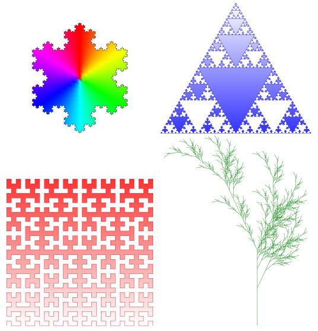

11 KỸ THUẬT ĐỆ QUI
Chương này giới thiệu phương pháp lập trình theo kỹ thuật đệ quy, phân loại, cách hoạt động và cách cài đặt các hàm đệ quy.
11.1 LÝ THUYẾT
Một khái niệm là khái niệm đệ qui nếu trong định nghĩa của nó có sử dụng lại chính nó
Một hàm là hàm đệ qui nếu trong thân của hàm đó có những lệnh gọi lại chính nó một cách tường minh hay tiềm ẩn.
Những hình tự đồng dạng

Các loại đệ qui
Đệ qui tuyến tính
Trong mỗi lần thực hiện, hàm gọi lại chính nó không quá một lần
⟨Kiểu dữ liệu hàm⟩ ⟨Tên hàm⟩(⟨danh sách tham số⟩)
{
if(⟨điều kiện dừng⟩)
{
...
}
else
{
...
⟨Tên hàm⟩(⟨danh sách tham số⟩);
...
}
} Tính tổng S_{n}=1+2+...+n
Phân tích bài toán
Phần dừng: S_{0}=0
Phần đệ qui: S_{n}=S_{n-1}+n với n>0
int TinhTong(int n)
{
if(n==0)
return 0;
else
return (TinhTong(n-1) + n);
} Tính P_{n}=n!
Phân tích bài toán
Phần dừng: P_{0}=1
Phần đệ qui: P_{n}=P_{n-1}.n với n>0
int TinhGiaiThua(int n)
{
if(n==0)
return 1;
else
return (TinhGiaiThua(n-1) * n);
} Đệ qui nhị phân
Trong mỗi lần thực hiện, hàm gọi lại chính nó không quá hai lần
⟨Kiểu dữ liệu hàm⟩ ⟨Tên hàm⟩(⟨danh sách tham số⟩)
{
if(⟨điều kiện dừng⟩)
{
...
}
else
{
...
⟨Tên hàm⟩(⟨danh sách tham số⟩);
...
⟨Tên hàm⟩(⟨danh sách tham số⟩);
...
}
} Tính số f_{n} của dãy Fibonacci \left\{ 1,\,1,\,2,\,3,\,5,\ldots\right\}
Phần dừng: f_{0}=1 và f_{1}=1.
Phần đệ qui: f_{n}=f_{n-1}+f_{n-2} với n>1
int Fibo(int n)
{
if(n==0 || n==1)
return 1;
else
return Fibo(n-1) + Fibo(n-2);
} Bài toán tháp Hà Nội
Phần dừng: n=1 thì A\to C
Phần đệ qui:
Bước 1: Di chuyển n-1 đĩa trên cùng từ cọc A sang cọc B.
Bước 2: A\to C.
Bước 3: Di chuyển n-1 đĩa trên cùng từ cọc B sang cọc C.
// Hàm đệ quy giải bài toán Tháp Hà Nội
void ThapHaNoi(int n, char A, char B, char C) {
if (n == 1) {
std::cout << "Di chuyen dia 1 tu " << A << " sang " << C << std::endl;
return;
}
// Di chuyển n-1 đĩa từ A sang B, lấy C làm trung gian
ThapHaNoi(n - 1, A, C, B);
// Di chuyển đĩa lớn nhất (đĩa thứ n) từ A sang C
std::cout << "Di chuyen dia " << n << " tu " << A << " sang " << C << std::endl;
// Di chuyển n-1 đĩa từ B sang C, lấy A làm trung gian
ThapHaNoi(n - 1, B, A, C);
}Đệ qui phi tuyến
Trong mỗi lần thực hiện hàm, có thể gọi lại chính nó hơn hai lần
⟨Kiểu dữ liệu hàm⟩ ⟨Tên hàm⟩(⟨danh sách tham số⟩)
{
if(⟨điều kiện dừng⟩)
{
...
}
else
for (int i = 1; i<=n; i++)
{
...
⟨Tên hàm⟩(⟨danh sách tham số⟩);
...
}
}Tính số hạng thứ n của dãy x_{n} được định nghĩa như sau:
\begin{array}{l} x_{0}=1\\ x_{n}=n^{2}x_{0}+\left(n-1\right)^{2}x_{1}+...+1^{2}x_{n} \end{array}
Phần dừng: dựa trên định nghĩa
Phần đệ qui: dựa trên định nghĩa
int TinhXn(int n)
{
if(n==0) return 1;
int s = 0;
for (int i=1; i<=n; i++)
s = s + i * i * TinhXn(n-i);
return s;
} Đệ qui hỗ tương
Hàm thứ nhất và hàm thứ hai gọi qua lại lẫn nhau.
⟨Kiểu dữ liệu hàm⟩ ⟨Tên hàm 1⟩(⟨danh sách tham số⟩);
⟨Kiểu dữ liệu hàm⟩ ⟨Tên hàm 2⟩(⟨danh sách tham số⟩);
...
⟨Kiểu dữ liệu hàm⟩ ⟨Tên hàm 1⟩(⟨danh sách tham số⟩)
{
...
⟨Tên hàm 2⟩(⟨danh sách tham số⟩);
...
}
⟨Kiểu dữ liệu hàm⟩ ⟨Tên hàm 2⟩(⟨danh sách tham số⟩)
{
...
⟨Tên hàm 1⟩(⟨danh sách tham số⟩);
...
} Tính số hạng thứ n của hai dãy x_{n} và y_{n} được định nghĩa như sau:
\begin{array}{l} x_{0}=1\\ y_{0}=1\\ x_{n}=x_{n-1}+y_{n-1}\\ y_{n}=n^{2}x_{n-1}+y_{n-1} \end{array}
Phần dừng: dựa trên định nghĩa
Phần đệ qui: dựa trên định nghĩa
int TinhXn(int n);
int TinhYn(int n);
int TinhXn(int n)
{
if(n==0) return 1;
return TinhXn(n-1) + TinhYn(n-1);
}
int TinhYn(int n)
{
if(n==0) return 1;
return n*n*TinhXn(n-1) + TinhYn(n-1);
} Các ví dụ
Viết hàm tính lũy thừa x^{n} bằng kỹ thuật đệ qui
float TinhLuyThua(float x, int n)
{
if(n==0) return 1;
else return x*TinhLuyThua(x,n-1);
}Viết hàm tính tổng các phần tử có giá trị chẵn của một dãy số kỹ thuật đệ qui.
int TongChan(int a[], int n)
{
if(n==0) return 0;
int s = TongChan(a, n-1);
if(a[n-1]%2==0) s+=a[n-1];
return s;
}Cho dãy số nguyên a gồm n phần tử có thứ tự tăng dần. Tìm phần tử có giá trị x có xuất hiện trong mảng không bằng kỹ thuật đệ qui.
int TimNhiPhan(int a[], int l, int r, int x)
{
int m = (l+r)/2;
if(l>r) return -1; // Không có phần tử x
if(a[m]==x)
return m; // Trả về vị trí tìm thấy
if(a[m]>x)
return TimNhiPhan(a, l, m-1, x);
if(a[m]<x)
return TimNhiPhan(a, m+1, r, x);
}11.2 BÀI TẬP
Bài tập cơ bản
Cài đặt bằng đệ qui lại những bài tập ở chương mảng một chiều.
Tìm chữ số có giá trị lớn nhất của số nguyên dương n.
Hãy xây dựng một dãy gồm N số có giá trị từ 1 đến K cho trước, sao cho không có hai dãy con liên tiếp đứng kề nhau. Ví dụ, N = 6 và K = 3 thì kết quả: 121312
Tìm ước số chung lớn nhất của hai số nguyên dương a và b.
Tìm chữ số đầu tiên của số nguyên dương n.
Tìm dãy nhị phân dài nhất sao cho trên dãy này không có hai bộ k bất kỳ trùng nhau. Bộ k là dãy con có k số liên tiếp nhau trên dãy tìm được. Ví dụ, k = 3 thì kết quả là 0001011100
Tính P(n)=1.3.5...(2n+1) với n>0
Tính P(n)=1+3+5+...+(2n+1) với n>0
Tính P(n)=1-2+3-...+(-1)^{n+1}n với n>0
Tính P(n)=1+1.2+1.2.3+...+1.2.3...n với n>0
Tính P(n)=1+(1+2)+(1+2+3)+...+(1+2+3+...+n) với n>0
Tính P(n)=1^{2}+2^{2}+3^{2}+...+n^{2} với n>0
Tính P(n)=1+\frac{1}{2}+\frac{1}{3}+...\frac{1}{n} với n>0
Tính P(n)=1+\frac{1}{1+2}+\frac{1}{1+2+3}+...+\frac{1}{1+2+3+...+n} với n>0
Tính P(x,n)=x^{n} với n là số nguyên không âm
Bài tập luyện tập và nâng cao
Cho số nguyên dương n. In ra biểu diễn nhị phân của n.
(*) Tính S(n)=\sqrt{n+\sqrt{n-1+\sqrt{n-2+...+\sqrt{1}}}} với n>0
(*) Tính S(n)=\sqrt{1+\sqrt{2+\sqrt{3+...+\sqrt{n}}}} với n>0
(*) Tính \frac{1}{1+\frac{1}{1+\frac{1}{1+...+\frac{1}{1+\frac{1}{1}}}}} với n>0
(**) Cài đặt bài toán mã đi tuần.
(**) Cài đặt bài toán tám hậu.
(*) Cài đặt hàm tính x.y với x,y là các số nguyên không âm mà chỉ được dùng các tính cộng và shift left và shift right thông qua công thức sau x.y=\begin{cases} 0 & \text{nếu }x=0\\ \left(x\gg1\right).\left(y\ll1\right) & \text{nếu }x\text{ là số chẵn}\\ \left(x\gg1\right).\left(y\ll1\right)+y & \text{nếu }x\text{ là số lẻ} \end{cases}
Cài đặt hàm in ra tất cả các chỉnh hợp chập k của n phần tử, với k\in\left[0,...,n\right].
Cài đặt hàm in ra tất cả các hoán vị của n phần tử.
Cài đặt hàm in ra tất cả các tổ hợp chập k của n phần tử, với k\in\left[0,...,n\right].
11.3 TÓM TẮT
Đệ qui cung cấp cho ta cơ chế giải quyết các bài toán phức tạp một cách đơn giản hơn. Xây dựng hàm đệ qui thông qua việc xác định điều kiện dừng và bước thực hiện tiếp theo. Chỉ nên cài đặt bằng phương pháp đệ qui khi không còn cách giải quyết bằng cách lặp thông thường.